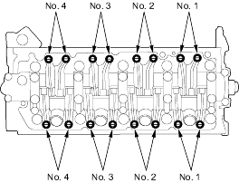
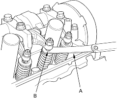
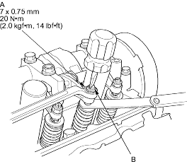
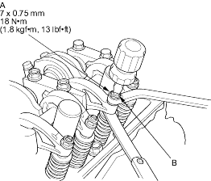

- Select the correct thickness feeler gauge for the valves you are going to check.
Intake:0.18 - 0.22 mm (0.007 - 0.009 in.)
Exhaust:0.23 - 0.27 mm (0.009 - 0.011 in.)
Adjusting screw location:

- Insert the feeler gauge (A) between the adjusting screw (B) and the end of the valve stem and slide it back and forth; you should feel a slight amount of drag.

- If you feel too much or too little drag, loosen the locknut (A) and turn the adjusting screw (B) until the drag on the feeler gauge is correct.
D17A2, D17A5, D17A9 engines:

D17A8 engine:

- Tighten the locknut and recheck the clearance. Repeat the adjustment if necessary.